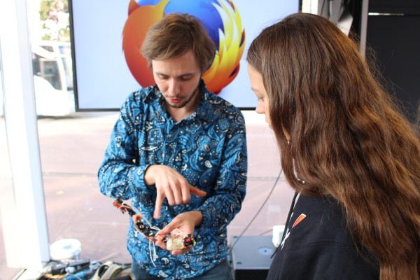

時至今日，線上隱私和威脅 (如第三方隱形追蹤) 之間的對決已經趨向白熱化。對於自己線上資料的流向，許多人不是毫不知情就是根本使不上力。整個網際網路正轉變為一幢巨型的玻璃屋，其內的個人資訊往往是赤裸裸展現予有需要的第三方觀看。
我們最近剛釋出 Firefox 隱私瀏覽模式的追蹤保護功能，針對那些在使用者不知情狀態下蒐集資料的第三方，要為 Firefox 使用者提供有意義的選擇。此功能除了要滿足大家的線上隱私需求之外，也希望能串連 Mozilla 的 Web 願景，以及內容攔截爭議的可能解決方案持續發酵。
玻璃屋
我們前不久才在德國漢堡 (Hamburg) 舉辦了為期 3 天的線上隱私活動。緊接著想和大家分享相關成果，還有在該市著名的繩索街 (Reeperbahn) 所拍攝的實驗影片。
什麼實驗？
我們試著透過有形的方式，解釋如線上隱私這類較難以視覺化的事物。我們特別打造一棟公寓，其內架設短期背包客需要的設備，再提供給各類旅客住宿。但只要旅客登入公寓的 Wi-Fi，所有牆壁就會退開，讓旅客暴露在大庭廣眾之中，且在公開私人資訊之後也會造成額外的騷動。
這些旅客的反應在真實不過了。
為達到戲劇效果，我們必須安排了幾名演員來強調一般人平常不會注意到的個人資料問題，以歡迎來到玻璃屋的各位！
這個實驗是為了教育群眾並培養大家對個人資料的概念，不過我們仍訪問了這些旅客的想法與感覺。以下是某些最切中要害的反應：
談談現今 Web 的資料控制情形
在接下來的兩天裡，我們讓德國的技術與隱私專家 (位於漢堡的Digital Media Women 團隊)、Mozilla 社群成員，以及對線上隱私權議題感興趣的人，在同一棟玻璃屋內討論 Web 的資料與控制情形。
此一小型座談會是交由德國資料保護專家，同時也是「crowdmedia」創辦人兼營運總監 Svenja Teichmann 所主持。席間在路人可圍觀的玻璃牆內討論線上隱私保護的多個面相，以及如 「現今的隱私到底為何」等問題。
從左至右分別為：〈The Google Empire〉一書的作者 Lars Reppesgaard、crowdmedia 創辦人 Svenja Teichmann、德國資料保護基金會 (German Data Protection Foundation) 主席 Frederick Richter、Firefox 產品行銷資深經理 Winston Bowden。
Frederick Richter 指出使用者的不安全感：「我們在網路上根本不知道有誰在監視我們。而且許多人沒有簡單好用的功能，所以無法保護自己的線上隱私。」Lars Reppesgaard 基本上並不反對攔截功能，但認為使用者應該有選擇的權利：「如果你希望享受方便的科技，有時仍須提供個人資料。但是大多數的使用者無從得知自己是被誰追蹤、又在何時受到追蹤。」而談到 Firefox 隱私瀏覽模式的追蹤保護功能，Winston Bowden 強調：「我們不反對線上廣告。線上廣告絕對是合法的網路收入來源，也能刺激源源不斷的有趣內容。但是在使用者不知情，甚至已經主動選擇不想被追蹤的狀況下照樣追蹤，就很不應該了。開放且自由的 Web，是我們該保護的無價公共財，且使用者應該能掌握自己的資料。」
教育與交流
最後，德國的 Mozilla 社群成員加入整個活動，為大家解說 Firefox 是如何協助使用者控制自己的線上經驗。他們解釋「追蹤保護」的發想背景，也展示如 Lightbeam 的附加元件，討論「聰明正視隱私」與「Web 素養」方案，可讓大家深入了解 Web 的運作方式。

感謝所有幕後工作人員，以及在漢堡參與此一活動規劃的所有人。Mozilla 感謝大家的鼎力協助，讓群眾能進一步了解並掌握自己的線上隱私。